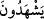
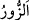

Ahmed b. Hanbel ise: “Herkesçe bilinen yerlerde dolaştırılıp tanıtılır ve “Biz onun
yalan yere şahitlik yaptığını gördük, ondan sakının” denir.” demiştir. Hz. Ömer (r.a)
yalan şahitlik yapana kırk değnek vurur, yüzünü karaya boyar ve çarşıda dolaştırırdı.
Nitekim Keşfü’l-esrâr’da böyle geçmektedir.
İbn Atıyye (r.h.) der ki: “Yalan şâhidlik, kalbin müşâhedesi olmadan dilin şâhidlik
yapmasıdır.”
“ kelimesinin bulunmak, hâzır olmak anlamındaki “dan olması da
mümkündür. Yâni onlar yalan sözlerin konuşulduğu ve çirkin davranışların revaçta
olduğu toplantılarda ve meclislerde hazır bulunmazlar. Çünkü bâtıl ile beraberlik ona
rızâ göstermeye delil olduğu için onunla ortak olmuş olur. Mesela zaruret olmaksızın
içki içen kimsenin yanında oturmak onunla aynı günahı paylaşmak demektir.
Melâmetiyye’ye gelince; onlar kalbleri Allah’la beraber olduğu için hiçbir hayrı açığa
vurmaz ve hiçbir şerri gizlemezler. Çarşılarda dolaşırlar ve insanlarla halk diliyle
konuşurlar. Kötülüklerde insanlara muvafakat etmemek maksadıyla kaza ve kaderi
müşâhede etmek için bazı kötülüklerin işlendiği yerlerde hazır bulunurlar. Hakîkatta
onlar Rahmân’ın kullarıdır. Rasûlûlllah (s.a.)’in “Velîlerim kubbelerimin altındadır,
benden başkası onları tanımaz.” hadîsinde kasdedilen onlardır.
Hâfız der ki:
Amel defterinin siyahlığı yüzünden bu sarhoşu kınama
Kaza ve kader kalemi başına ne yazdı, kim bilebilir?
Kemâl Hucendî de şöyle der:
Ey Kemâl, kalk, çünkü rindler riya yüzünden
Melâmet mahallesinde ikâmeti seçtiler
Bazıları “ ile müşriklerin, yahûdî ve hristiyanların bayramlarının kasdedildiğini
söylemişlerdir. Nitekim Kâşifî’nin tefsîrinde “ya da onların oyun yerleridir” der.
el-Fütûhât Tercûmesi’nde ise şöyle der: “Zimmet ehli seni şirkle aldatmamalıdır. Hak
katında senin helâkin bu yüzdendir. Şeyh-i Ekber şöyle buyurur: “Şam’da şu mânâyı
müşâhede ettim ki kadınlar ve erkekler hristiyanlara karşı hoşgörülü davranıyorlar,
çoluk çocuklarını kiliselere götürüyorlar ve teberrük için vaftiz suyundan onların
üzerlerine serpiyorlar. Bu yapılanlar küfre yakındır veyahut bizzat küfürdür. Bu
davranışı hiçbir müslüman beğenemez.”
Kâdîhân’da der ki: “Bir kimse diğer günlerde satın almadığı bir şeyi nevruz gününde
satın alsa, bununla kâfirlerin tâzim ettiği şekilde o güne tâzimi kasdediyorsa bu
küfürdür. Sadece nevruz günü içmek ve nimetlenmek için böyle yapmışsa küfûr olmaz.”
Kâdîhân’ın sözünden anlaşılan buradaki nevruzun acemlerin değil hristiyanların
nevruzu (yılbaşısı) olduğudur.